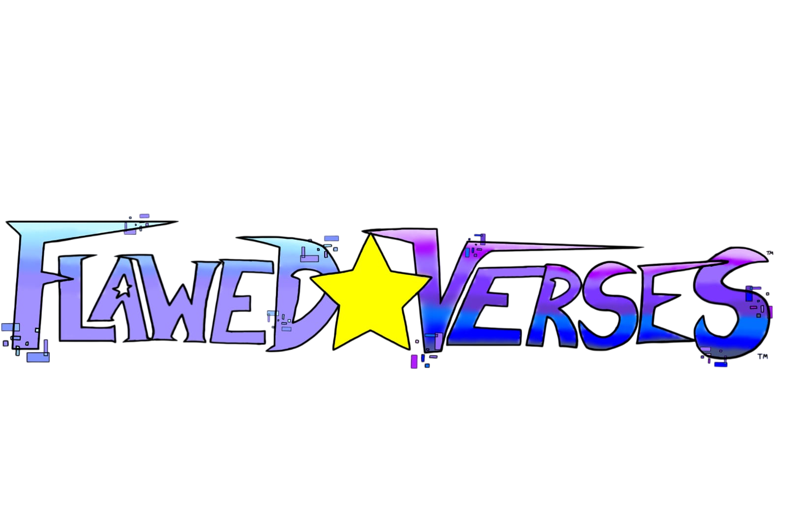

Se aventure em nossos novos lançamentos e projetos!
NewStar Studios™
Um estúdio que trabalha com carinho, amor e dedicação.
Conheça nossos projetos como:
NOVOS JOGOS
NOVAS HISTÓRIAS
Acompanhe nossos lançamentos.


FlawedVerses™
Conheça a história de como dois grandes amigos se conheceram!..
Astro e Zyphor
Premissa
Astro, um gato curioso e aventureiro, é recrutado pela Fundação Nexus para proteger os universos ao lado de Zyphor, uma estrela experiente e leal. Juntos, eles descobrem a existência do Núcleo de Tudo, responsável por manter todas as realidades. Enquanto enfrentam Os Fragmentados, uma organização que deseja controlar os universos, os dois embarcam em diversas aventuras e fortalecem sua amizade.